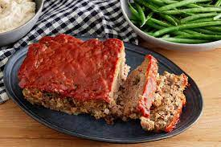

MeatLoaf
PREP: 15 minutes COOK: 1 hour TOTAL: 1 hour 15 minutes SERVINGS: 8
Ingredients
- 1 1/2 lbs ground beef
- 1 egg
- 1 onion (chopped)
- 1 cup milk
- 1 cup dried bread crumbs
- pinch of salt and pepper to taste
- 1/3 cup ketchup
- 2 tablespoons brown sugar
- 2 tablespoons prepared mustard
Instructions
- Preheat the oven to 350 degrees F (175 degrees C). Lightly grease a 9x5-inch loaf pan.
- Combine ground beef, onion, milk, bread crumbs and egg in a large bowl; season with salt and pepper. Transfer into prepared loaf pan.
- Mix ketchup, brown sugar, and mustard together in a small bowl until well combined; pour over meatloaf and spread it evenly over the top.
- Bake in the preheated oven until no longer pink in the center, about 1 hour.
Southern Fried Chicken and Waffles
PREP: 1 hour COOK: 45 minutes TOTAL: 1 hour 45 minutes SERVINGS: 6
Ingredients
For The Brine
- 2 chicken breasts bonelessm skinless
- 1 cup buttermilk
- 1/2 teaspoon salt
- 1/2 teaspoon pepper
- 1 cup dried bread crumbs
- 2 tablespoons hot sauce
For Frying The Chicken
- 1 1/4 cups flour
- 1/2 cups cornmeal
- 1 teaspoon smoked paprika
- 1/8 teaspoon cayenne pepper
- 1/2 teaspoon salt
- 1/4 teaspoon black pepper
- 1 cup buttermilk
- canola or peanut oil for frying
For The Waffles
- 1 cup yellow cornmeal
- 1 cup all purpose flour
- 2 teaspoons double acting baking powder
- 1/2 teaspoons baking soda
- 1/4 teaspoon salt
- 2 cups buttermilk well shaken
- 2 eggs
- 1/4 cup maple syrup
- 4 tablespoons butter melted
- 1 cup cheddar cheese (shredded)
- 1 bunch scallions sliced (white and pale green parts only)
- 1 tablespoon minched chives
Instructions
For The Brine
- Place a large piece of plastic wrap on the counter. Place one chicken breast at a time in the center of the plastic wrap and fold half the plastic over the top of the chicken. Use the flat side of a meat mallet to pound the chicken to an even 1/2″ thickness. Set aside.
- In a zip lock baggie, add the buttermilk and hot sauce, seal the bag and massage the ingredients together. Season the chicken breasts with salt and pepper and add them to the brine. Seal the bag. Let the chicken marinate in the refrigerator for at least 4 hours or overnight.
For The Chicken
- Preheat the oven to 250°.
- Remove the chicken from the refrigerator half an hour before you start to fry. This is so that the chicken isn’t ice cold when you put it in the fryer — which would dramatically reduce the heat of the oil and cause the chicken to soak up the grease, instead of frying in it.
- Set up two shallow bowls for dredging. In one bowl, whisk together the flour, cornmeal, paprika, cayenne pepper, salt and black pepper. Add the buttermilk to the other bowl.
- Pat the chicken dry with paper towels and slice the breasts into 1" wide strips.
- In a medium heavy bottom skillet or dutch oven, heat about 1″ canola or peanut oil over medium to medium high heat, until its between 350°-375°.
- Working in batches, dip chicken strips into the flour mixture, then the buttermilk, then back into the flour. Tap off excess flour and gently place chicken strips into the hot oil. Do not crowd the pan — only cook 3-4 strips of chicken at a time. Fry for 6-8 minutes, turning occasionally with tongs until the chicken is crispy and a deep golden brown. Transfer cooked chicken to a baking sheet lined with paper towels to drain. Place the baking sheet in the oven to keep chicken warm.
For The Waffles
- In a large bowl combine flour, cornmeal, baking powder, baking soda and salt. Whisk together and set aside.
- In a smaller bowl add buttermilk, eggs, butter and maple syrup. Whisk thoroughly to combine. Add wet ingredients to dry ingredients and stir until just mixed. Stir in the cheddar cheese, sliced scallions and chives.
- To make the waffles, preheat the waffle iron. Lightly coat with vegetable spray if necessary. Scoop batter onto the center of the waffle iron. Close the lid and bake until browned and crisp, about 5-7 minutes. Place waffles on a baking sheet and keep warm in the oven while you continue cooking the rest of the batter.
- To serve: Stack 2-3 waffles on a plate toped by 2-3 strips of chicken, maple syrup, shredded cheese and chives.